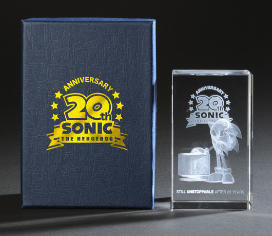
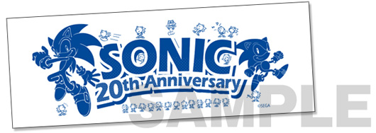
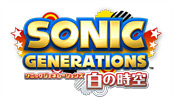
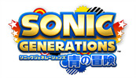

2011.11.14
セガSTORE限定特典のご案内
セガSTOREで「ソニック ジェネレーションズ 20周年記念セット」が数量限定で発売！
重みのあるクリスタルキューブ内部に、20周年オリジナルデザインのソニックが3D立体レーザー彫刻された限定商品を20周年記念ロゴ箔押しの豪華外箱でお届け!!
20周年記念セット 予約受付終了のご案内
「ソニック ジェネレーションズ 20周年記念セット」購入の受付は終了いたしました。
セガSTORE
【Sonic 20th Anniversay クリスタルキューブ】

※20周年記念セットには数量に限りがございますので、予めご了承下さい。
「Sonic 20th Anniversay クリスタルキューブ」
【Sonic 20th Anniversay 手ぬぐい】

※画像はイメージです。
→『ソニック ジェネレーションズ 白の時空』PlayStation3版 →『ソニック ジェネレーションズ 白の時空』Xbox360版 →『ソニック ジェネレーションズ 青の冒険』 Nintendo3DS版
→『ソニック ジェネレーションズ 白の時空』 20周年記念セット PlayStation3版 →『ソニック ジェネレーションズ 白の時空』20周年記念セット Xbox360版 →『ソニック ジェネレーションズ 青の冒険』20周年記念セット Nintendo3DS版
2011.10.03
発売日変更のお知らせ
『ソニック ジェネレーションズ 白の時空』『ソニック ジェネレーションズ 青の冒険』の発売日が2011年12月1日 に変更になりました。
→ 『ソニックジェネレーションズ』公式サイト
2011.08.25
『ソニック ジェネレーションズ』12月8日発売決定！
PlayStation®3/Xbox360®『ソニック ジェネレーションズ 白の時空』、ニンテンドー3DS『ソニック ジェネレーションズ 青の冒険』の発売日が、12月8日に決定いたしました。
『白の時空』『青の冒険』それぞれご予約いただいた方に、収録楽曲の異なる『White Edition』『Blue Edition』の2種類のサウンドトラックCDをご用意いたしました。懐かしのステージ楽曲が満載の、ソニックファンなら必携のアイテムですので、ぜひこの機会をお見逃しなく！
※予約特典は数量に限りがございます。
→ 『ソニックジェネレーションズ』公式サイト
2011.06.02
ニンテンドー3DS版『ソニック ジェネレーションズ』発売決定
「ソニック」シリーズの最新作として2011年冬に発売を予定している『ソニック ジェネレーションズ（仮称）』について、すでに発表しているPlayStation3 / Xbox 360版に加え、ニンテンドー3DS版も発売することが決定いたしました。
『ソニック ジェネレーションズ』正式タイトル名決定！
PlayStation3 / Xbox 360版の正式タイトル名を『ソニック ジェネレーションズ 白の時空』、ニンテンドー3DS版の正式タイトル名を『ソニック ジェネレーションズ 青の冒険』とし、タイトルだけではなくゲームの内容も異なる2タイトルとして発売いたします。
 【 PlayStation3 / Xbox360 版 商品概要 】
タイトル名称
ソニック ジェネレーションズ 白の時空
対応機種
PlayStation3 / Xbox 360
発売日
2011年冬
価格
未定
ジャンル
ハイスピードメモリアルアクション
プレイ人数
１人
 【 ニンテンドー3DS版 商品概要 】
タイトル名称
ソニック ジェネレーションズ 青の冒険
対応機種
ニンテンドー3DS
発売日
2011年冬
価格
未定
ジャンル
ハイスピードメモリアルアクション
プレイ人数
1～2人
→ 『ソニックジェネレーションズ』公式サイト
2011.04.22
『ソニック ジェネレーションズ（仮称）』発売決定！
全世界でシリーズ累計7000万本以上を売上げ、多くの人々に愛されてきたソニックシリーズが、今年で20周年を迎えました。
『ソニック ジェネレーションズ（仮称）』は、これまでの「ソニック」シリーズに登場した人気ステージの数々を最新技術でよみがえらせ、高速3Dアクション、2D横スクロールアクションの新旧２つのスタイルから選んで遊ぶことができる、ハイスピードメモリアルアクションです。
→ 『ソニックジェネレーションズ』公式サイト